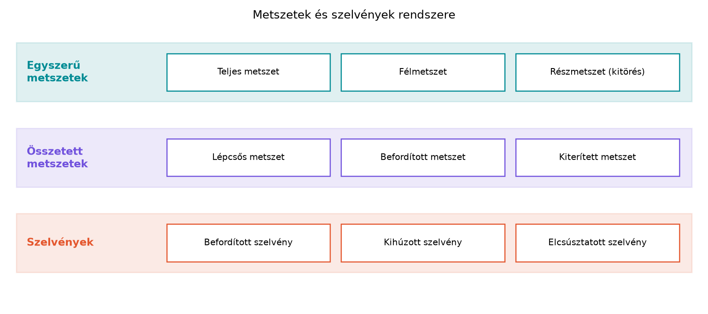

A műhelyben a gyártói javítási rajzok gyakran „röntgenfelvételként” mutatják meg a rejtett belső részeket: a féknyereg munkahengerének tömítőhornyát, a dugattyú gyűrűhornyait, a hengerfej olajjáratait vagy a lengéscsillapító belső szerkezetét. A vetületi nézetben ezek sokszor szaggatott vonalként jelennének meg, vagy egyáltalán nem látszanának. A metszet ezért nem felesleges rajztechnikai dísz, hanem a járműalkatrész belső kialakításának pontos közlési módja. Aki metszetet nem tud olvasni, az a javítási útmutató alapján sem tudja eldönteni, hogy egy csatorna üreg, egy horony helye vagy egy csavar hosszirányú teste-e a rajzon látható alakzat.
Továbbvitt eredmény. A metszetolvasás során megtanuljuk a vágott anyagfelület, a metszet mögött látható kontúr és a nem metszendő alkatrész megkülönböztetését. Ezt a Méretmegadás, felületi érdesség, tűrések és illesztések alfejezetben használjuk fel: a tűréseket és a felületi érdességet leggyakrabban a metszett felületeken adják meg, ezért a metszetjelölés pontos olvasása nélkül a mérethálózat is félreérthető.
Képzeljük el, hogy egy acélperselyt a hossztengelyén átmenő síkkal félbevágunk. Az elején lévő, hozzánk közelebbi anyagot eltávolítjuk, mintha egy fűrész pontosan a vágósík mentén kettévágná. Ezután arra a részre nézünk rá, amelyik mögöttünk maradt. A vágás helyén látható anyagfelületet vékony, párhuzamos vonalakkal – sraffozással – jelöljük. A furat ürege nem kap sraffozást, viszont a furat mögötti, nem vágott anyag körvonala látható marad. A persely metszetén így egyszerre látjuk a külső és belső átmérőt, valamint azt is, hogy a furat mélyén van-e váll, zsákfurat vagy átmenő furat.
Definíció. A metszet olyan ábrázolási mód, amelynél a tárgyat képzeletbeli vágósíkkal elvágjuk, az elülső részt eltávolítjuk, és a hátul maradó részt vetületként rajzoljuk meg. A vágósíkba eső anyagfelületet sraffozással jelöljük, a metszet mögött látható kontúrokat pedig folytonos vonallal rajzoljuk meg.
Definíció. A szelvény ettől abban különbözik, hogy csak a vágósíkba eső anyagfelületet ábrázoljuk; a metszősík mögött látható kontúrokat nem rajzoljuk meg. A szelvény tehát a metszetnél kevesebbet mutat, de alkalmas például bordák, küllők, hornyok vagy idomacélok keresztmetszetének egyszerű ábrázolására.
Szabály. A vágósík nyomvonalát a nézeten szaggatott
pontvonallal, a széleken nyilakkal és betűjellel (például
A-A) jelöljük. A metszet fölött vagy mellett ugyanezt a
betűjelet feltüntetjük. A gyártói rajzokon gyakran rövidített jelölést
látunk, ezért mindig a teljes rajzi jelölést és a vonatkozó rajzi
szabványt kell követni.
Szabály. A sraffozást vékony folytonos vonallal, általában a kontúrhoz vagy a tengelyhez képest 45°-os szögben rajzoljuk. Egy alkatrész minden vágott felülete azonos irányú és osztású sraffozást kap. Szomszédos, egymástól különböző alkatrészeknél eltérő irányt vagy osztást használunk, hogy a rajzolvasó meg tudja különböztetni az érintkező részeket.
Előírás. A metszeti ábrázolás, a vágósík jelölése és a sraffozás alapelveit a műszaki rajzi szabványsorozat rögzíti (Magyarországon az MSZ EN ISO 128-sorozat, ellenőrizendő: a vonatkozó részsorozatok pontos száma és a hatályos állapot). A gyártói javítási rajz mindig az adott járműalkatrész mérvadó ábrázolása.

A fenti ábra rendszerezi a legfontosabb fajtákat. A gyakorlatban a metszetfajtát az alkatrész alakja és a közlendő belső részlet határozza meg.
Teljes metszet: a vágósík a tárgy teljes hosszán vagy teljes szélességén átmegy. A metszet így a teljes belső keresztmetszetet mutatja. Jellemzően hosszanti irányban alkalmazzuk perselyek, hengerfuratok, fékhengerek és szelepvezetők esetén.
Félmetszet: szimmetrikus alkatrésznél a nézet egyik fele külső nézet, másik fele metszet. A két fél határa a szimmetriatengely, amelyet szaggatott pontvonallal rajzolunk. A félmetszet takarékos, mert egy nézetben mutatja a külső és a belső kialakítást.
Részmetszet vagy kitörés: a nézetnek csak egy kisebb részén tárjuk fel a belső alakzatot. A kitörés határa vékony szabadkézi vonal vagy vékony cikcakkvonal. Például egy hengerfejcsavar-furat helyi metszetén csak a menetes zsákfuratot mutatjuk, nem az egész hengerfejet vágjuk át.
Lépcsős metszet: ha a tárgyban két vagy több jellemző belső részlet eltérő magasságban, síkban fekszik, akkor párhuzamos, eltolt vágósíkokat használunk. A metszetben a lépcső eltolási éle nem rajzolható meg, mert az a vágósíkváltásnak nem valódi éle. A metszet a furatokat, hornyokat egyetlen síkba képzelve mutatja. A vágósík nyomvonala a nézeten jelzi a lépcsőzést.
Befordított metszet: ha a vágósík ferde helyzetű, a metszetet a rajzlap síkjába beforgatva, a nézet irányának megfelelően rajzoljuk. A forgatás irányát a betűjel és a nyíl jelzi.
Kiterített metszet: több ferde vágósík esetén a síkokat egyetlen közös síkba kiterítve ábrázoljuk. Így olyan bonyolult belső járatok is egy képen láthatóvá válnak, amelyek egyetlen síkkal nem metszhetők egyértelműen.
Befordított szelvény: a vágósíkba eső felületet a rajz síkjába 90°-kal beforgatva, a nézet kontúrjai közé rajzoljuk. Hosszú rudak, bordás merevítők, idomacélok ábrázolására alkalmas.
Kihúzott szelvény: a szelvényt a vágósík nyomvonalából kiemelve, a rajz szabad területére rajzoljuk. A szelvényt betűjellel jelöljük, és a vágósík helyét nyilakkal, betűvel mutatjuk. Előnye, hogy nagyobb léptékben, jól olvashatóan ábrázolható.
Elcsúsztatott szelvény: a kihúzott szelvényhez hasonló, de a szelvényt a vágósík irányából párhuzamosan elcsúsztatva helyezzük el, hogy ne takarjon fontos kontúrokat vagy méreteket. A gyakorlati rajzolvasásnál a betűjel és a nyilak egyértelműen összekapcsolják a szelvényt a vágósíkkal.
Szabály. Bizonyos gépelemeket akkor sem metszünk el, ha a vágósík hosszirányban áthalad rajtuk: csavar, csavarorsó, csapszeg, szegecs, tengely, golyó, görgő, ék, retesz, borda és küllő. Ezeket a metszetben is metszetlen, azaz nem sraffozott elemként rajzoljuk, csak a körvonalukat tüntetjük fel.
Az indoklás az, hogy ezek az elemek általában tömör, homogén alkatrészek, és a sraffozás nem adna új alakrajzi információt. Ha viszont a vágósík keresztirányban metszi őket, például egy tengelyt keresztben vágunk el, akkor a vágott felületet sraffozzuk.
Példa. A dugattyú hosszmetszetén a dugattyú anyaga sraffozott, a dugattyúcsapszeg viszont nem metszendő elem, ezért nem sraffozzuk, hanem csak a palástját és homlokfelületét rajzoljuk. A dugattyúgyűrűk hosszmetszetben vágott anyagot mutatnak, ezért sraffozottak. A féknyereg metszetén a rögzítőcsavarokat nem sraffozzuk, a nyereg anyagát viszont igen; a fékfolyadék-csatornák üregek, ezért sraffozás nélkül maradnak.
A nem metszendő elemeket egy csapágyazott tengely hosszmetszetén mutatja az alábbi ábra: a ház, a fedél, az agy és a csapágygyűrűk sraffozottak, a tengely, a golyó, a retesz és a csavar nem; a jobb oldali, áthúzott változatban minden elem sraffozott, ezért nem látszik, mi tömör gépelem és mi vágott ház.
A metszetek jelölését az 1. és 2. kidolgozott példa adataival
foglalja össze a következő ábra: (1) a Ø30/Ø12 × 40 mm-es persely nézete
a vágósík nyomvonalával és A-A teljes metszete sraffozott
fallal és sraffozatlan furattal; (2) a kétfuratú fedél lépcsős vágósíkja
és A-A metszete, amelyben a lépcső élét nem rajzoljuk meg
(a betétkép a hibás, lépcsőéllel rajzolt változat); (3) csavarkötés,
amelyben a csavar és az anya metszetlen, a két lemez ellentétes irányú
sraffozást kap. A HTML-kiadásban a szerkesztés lépésenként
lejátszható.
Megjegyzés. A metszet nem önálló, hanem a vetületi nézetekkel együtt olvasandó ábrázolás. A gyártói javítási rajzokon a metszet gyakran a méretek és tűrések hordozója, ezért az alábbi olvasási sorrendet érdemes követni: nézet – vágósík jelölése – metszett anyagfelület – nem metszendő alkatrészek – méretek.
Példa 1 – Teljes metszet olvasása és szerkesztése. Egy 30 mm külső átmérőjű, 12 mm belső átmérőjű, 40 mm hosszú acélperselyt kell teljes hosszmetszetben ábrázolni. A szerkesztés lépései:
A betűvel és nézetirány-nyilakkal.A-A.A rajz azt eredményezi, hogy egyetlen nézeten látjuk a persely két átmérőjét, anyagvastagságát, és azt, hogy a furat átmenő.
Példa 2 – Lépcsős metszet leolvasása. Egy öntött
fedélben két furat van: az egyik középen, a másik egy oldalsó lépcsőn
magasabb síkban. Két külön teljes metszet helyett lépcsős metszetet
választunk: az első vágósík a középső furaton, a másik eltolt,
párhuzamos sík az oldalsó furaton halad át. A metszetben mindkét furat
egyetlen A-A nézetben jelenik meg. A két vágósík közötti
lépcső élet a metszetben nem rajzoljuk meg, mert az nem
alkatrészél; a vágósík nyomvonala az alapnézetben mutatja a lépcső
eltolását. Ezáltal a rajz egyszerűbb, mint két külön metszet, de
ugyanazt a belső információt adja.
Metszetolvasáskor ellenőrizzük:
Ellenőrző sorrend: rajz – vágósík – sraffozás – nem metszendő elemek – méret. Ha bármelyik bizonytalan, a gyártói rajz címfelirata és a vetületi nézet az irányadó.
Valós eset. Egy személyautó féknyereg-javításakor a szerelő azt a gyártói metszeti rajzot kapja, amely a féknyereg munkahengerét, a dugattyút, a négyszöggyűrű hornyát és a porvédő hornyot mutatja. A rajzon a nyereg anyaga sraffozott, a fékfolyadék-csatorna üreg, a rögzítőcsavarok metszetlenek. A tömítőgyűrű hornya a sraffozott anyagban látható bemélyedés. A szerelő a metszet alapján azonosítja, hogy melyik horonyba kerül a négyszöggyűrű, és milyen a hornyok sorrendje a visszaszerelésnél. Ha nem tudná elkülöníteni a vágott anyagot a csatornától, könnyen felcserélhetné a porvédő és a tömítőhorony helyzetét.
Figyelem. A féknyereg metszeti rajzának félreolvasása a fékrendszer helytelen összeszereléséhez vezethet; a járműjavítás során ezért a szerelési rajzot a gyártói adatokkal és a tényleges alkatrész megszemlélésével együtt kell ellenőrizni.
Hiba. A vágott anyagfelületet nem sraffozzuk. Ekkor a metszet nem különül el a nézettől, és a belső anyaghatárok értelmezhetetlenné válnak. Helyes gyakorlat: a vágósíkba eső anyagot mindig sraffozni kell.
Hiba. A tengelyt, csavart vagy csapszeget hosszirányú metszetben sraffozzuk. Ez félrevezeti az olvasót, mert a tömör elem testét vágott anyagként mutatja. Helyes gyakorlat: a felsorolt nem metszendő elemeket hosszirányban csak körvonalukkal ábrázoljuk.
Hiba. A lépcsős metszetben a vágósíkváltás élét alkatrészélként berajzoljuk. A metszet így azt a téves benyomást kelti, hogy a tárgyon ott valóságos lépcső van. Helyes gyakorlat: a lépcső élét a metszetben nem rajzoljuk meg.
Hiba. Szomszédos alkatrészeknél azonos irányú és osztású sraffozást használunk. A rajzolvasó nem tudja szétválasztani a két anyagot. Helyes gyakorlat: eltérő irányt vagy osztást alkalmazzunk.
Hiba. A metszet mögött látható kontúrokat elhagyjuk, vagy éppen a szelvényben a mögöttes kontúrokat is berajzoljuk. A metszet így hiányos, a szelvény pedig pontatlan. Helyes gyakorlat: metszetnél a mögöttes látható éleket rajzoljuk, szelvénynél csak a vágósíkba eső felületet.
1. feladat (A). Fogalmazd meg saját szavakkal, hogyan keletkezik a metszet, és mi a metszet és a szelvény közötti lényeges különbség.
2. feladat (A). Sorold fel, mi mindent jelöl a metszeti rajzolvasónak a sraffozás szabályos alkalmazása.
3. feladat (B). Egy öntött fedél két furata eltérő síkban van. Magyarázd el röviden, miért lépcsős metszetet használunk, és miért nem rajzoljuk be a vágósíkváltás lépcsőfokát a metszetbe.
4. feladat (B). Állítsd helyes sorrendbe a teljes metszet szerkesztésének lépéseit: sraffozás, szimmetriatengely felvétele, vágósík jelölése, belső kontúrok rajzolása, metszet felirata. Indokold a sorrendet.
5. feladat (C). Hibaelemzés. Egy féknyereg metszeti rajzán a rögzítőcsavart hosszirányban sraffozva ábrázolták. Mi a hiba, milyen következménye lehet a javítás során, és hogyan kell helyesen ábrázolni?
6. feladat (D). Gyártói javítási rajzon egy dugattyú hosszmetszete látható. A rajzon a dugattyú anyaga sraffozott, a gyűrűhornyok bemélyedések, a csapszegfurat üreg. Milyen ellenőrző méréseket készítene elő a metszet alapján a dugattyú állapotfelméréséhez?
1. feladat. A metszet úgy keletkezik, hogy a tárgyat képzeletbeli vágósíkkal elvágjuk, eltávolítjuk az elülső részt, a hátul maradó részt vetítjük, és a vágott anyagfelületet sraffozzuk. A metszet mögött látható kontúrokat megrajzoljuk; a szelvénynél ellenben csak a vágósíkba eső felületet rajzoljuk.
2. feladat. A sraffozás mutatja a vágott anyagot, megkülönbözteti az üregektől, azonosítja, hogy a metszősík ténylegesen átvágta-e az anyagot, és eltérő irányával vagy osztásával szétválasztja a szomszédos alkatrészeket. A nem sraffozott elemek metszetlen anyagot, üreget vagy nem metszendő alkatrészt jelezhetnek.
3. feladat. A két furat eltérő síkban van, ezért
egyetlen egyenes vágósíkkal nem metszhetők egyszerre. A lépcsős metszet
párhuzamos, eltolt vágósíkokat használ, így mindkét furatot egy
A-A metszetbe vetíthetjük. A lépcsőfok nem valódi
alkatrészél, ezért a metszetben nem rajzolható meg; a vágósík nyomvonala
az alapnézeten jelzi az eltolást.
4. feladat. Helyes sorrend: szimmetriatengely felvétele, vágósík jelölése, belső kontúrok rajzolása, sraffozás, metszet felirata. Először a vetületi alapot, majd a vágósíkot kell rögzíteni, ezután rajzoljuk a belső üregek kontúrjait, végül a vágott anyag sraffozását és a metszet azonosító feliratát.
5. feladat. A hiba, hogy a rögzítőcsavart hosszirányban metszendő alkatrészként sraffozták. Ebből a rajzolvasó úgy olvashatja, hogy a csavar testét a metszősík anyagában átvágta, holott a csavar tömör, külön alkatrész. A javítás során félreérthető, hogy a csavar a nyereg anyagához tartozik-e, ami szerelési hibához vezethet. Helyesen a csavart metszetlen elemként, sraffozás nélkül, csak körvonalaival rajzoljuk.
6. feladat. A metszet alapján előkészíthető mérések: a dugattyúpalást átmérőjének mérése mikrométerrel, a gyűrűhornyok szélességének mérése hézagmérővel vagy tolómérővel, a horonymélység mérése, a csapszegfurat átmérőjének és furatjátékának mérése. A metszeten a sraffozott anyag mutatja, hogy mely felületek tartoznak a dugattyú anyagához; ezekre a felületekre vonatkoznak a gyártói kopási határok.
A metszet a tárgyat képzeletbeli vágósíkkal elvágva, az elülső részt eltávolítva ábrázolja; a vágott anyagfelületet sraffozzuk, a mögöttes kontúrokat megrajzoljuk. Az egyszerű metszetek közé tartozik a teljes, fél- és részmetszet (kitörés). Az összetett metszetek – lépcsős, befordított, kiterített – akkor szükségesek, ha a belső részletek egyetlen egyenes vágósíkkal nem ábrázolhatók. A szelvény csak a vágósíkba eső felületet mutatja; fajtái a befordított, kihúzott és elcsúsztatott szelvény. Csavart, tengelyt, csapszeget, szegecset, golyót, görgőt, éket, reteszt, bordát és küllőt hosszirányban nem metszünk; ezeket sraffozás nélkül rajzoljuk. A metszetolvasás során a vágott felületet, az üreget és a nem metszendő elemet mindig elkülönítjük, mert ezt a felismerést a Méretmegadás, felületi érdesség, tűrések és illesztések alfejezetben a tűrt felületek méretének leolvasásakor használjuk fel.